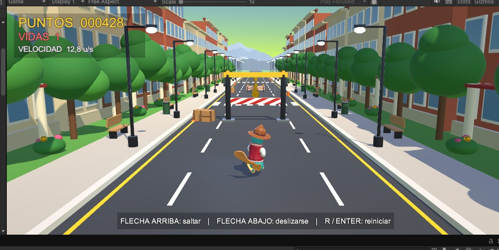
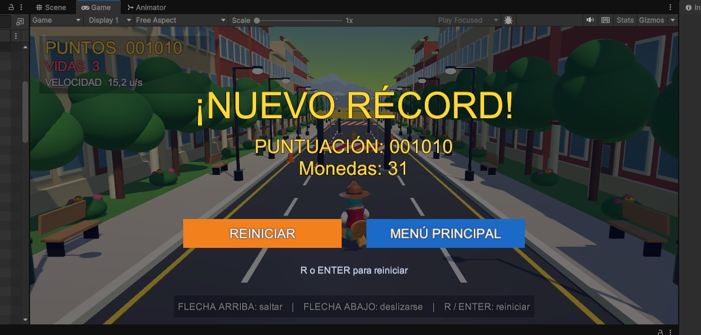
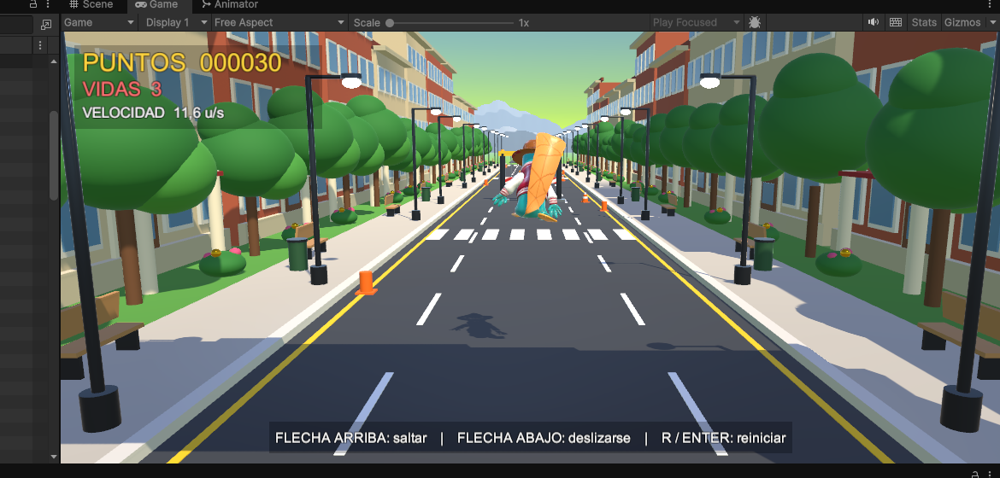
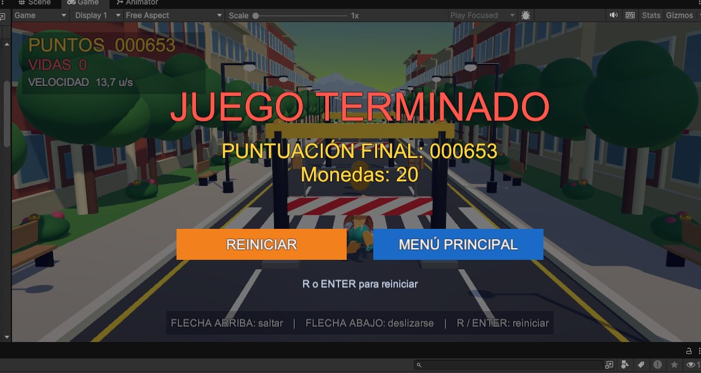

1 / 4
¡Corre, esquiva y llega a tiempo a clase!
Perry va tarde a clases y la avenida está llena de obstáculos. Cada golpe cuesta una vida y el reloj no espera. Tu meta: acumular 1000 puntos sin quedarte sin vidas y conseguir el nuevo récord.
Arte conceptual · La Paz
Una aventura universitaria ambientada en una ciudad inspirada en La Paz, con Illimani y teleféricos al fondo.
El universo del juego es una ciudad universitaria viva: una gran avenida bordeada por edificios de ladrillo y cristal, con árboles, faroles y bancas. Es un lugar cotidiano que, a toda velocidad, se convierte en una pista llena de riesgos.
La partida comienza en un día cualquiera con un problema muy reconocible: se hizo tarde. Obras, vallas y barras atraviesan la avenida y el tiempo no espera.
“Perry llega tarde a clases. ¡Corre por la avenida, esquiva los obstáculos y junta monedas!”
🎯 MISIÓN: LLEGAR A CLASES



Perry es un ornitorrinco universitario, aventurero, valiente y decidido, con chaqueta vino y sombrero marrón. Su rol es el de corredor: no ataca ni usa objetos; su única herramienta es la precisión de sus movimientos.
Se juega solo con el teclado. Perry corre automáticamente: tú decides cuándo saltar y cuándo deslizarte. Prueba tu teclado ahora mismo: las teclas de abajo se iluminan.
Flecha arriba. Para las vallas bajas naranja
Flecha abajo. Para las barras altas azul
Al terminar la partida, vuelve a empezar al instante.
Demostración automática: Perry corre, salta las vallas naranjas y se desliza bajo las barras azules por sí solo.
Alcanzar 1000 puntos antes de perder las tres vidas. Aparece “¡NUEVO RÉCORD!” con tu puntuación y las monedas juntadas.
Chocar con un obstáculo cuando ya no quedan vidas. Aparece “JUEGO TERMINADO” con la puntuación final.
Pasa el cursor (o toca) cada tarjeta para darle la vuelta.
Los parámetros de diseño del juego, tal como están configurados en Unity. Juega con ellos en el simulador.
Puntuación necesaria para ganar la partida.
Golpes que puedes recibir antes de perder.
Valla baja (saltar) y barra alta (deslizarse).
Crece 0,18 u/s cada segundo.
Premio extra por arriesgarse.
Se acumulan solo por sobrevivir.
Mueve los controles o presiona simular para ver cómo crecen la velocidad y los puntos.
Pasa el mouse o desliza el dedo sobre la gráfica para moverte en el tiempo. Sin monedas, la victoria llega a los 100 s con el mundo a 29 u/s.
Cada anillo compara el valor contra un máximo de referencia de su misma escala.
Así se ve Perry Runner 3D en acción. Toca una imagen para ampliarla y navega con las flechas del teclado.

⤢⤢
⤢Perry llega tarde a clases. Pulsa jugar, haz clic dentro del juego y usa las flechas para llegar a 1000 puntos sin perder las tres vidas.
Corre por la avenida, esquiva las vallas y llega a clases a tiempo.
▶JUGAR Se carga al hacer clic. La primera vez puede tardar unos segundos.Perry Runner 3D se controla con el teclado. En celular o tableta puede no responder: para jugar usa un computador.
El juego está pensado para teclado (flechas ↑ ↓). En celular o tableta puede no responder; para la mejor experiencia usa un computador.
Llega a 1000 puntos sin quedarte sin vidas. Sobrevivir da 10 puntos por segundo y cada moneda suma 25. Con 40 monedas ya tendrías 1000 puntos; sin monedas necesitas sobrevivir 100 s.
Pierdes una vida y Perry parpadea con 1,2 s de invulnerabilidad. Con 0 vidas aparece JUEGO TERMINADO.
Recarga la página con Ctrl + F5, activa la aceleración por hardware en tu navegador o abre el juego en otra pestaña con el botón de arriba.
Proyecto de la asignatura Game Development · Unidad 2: Scripting y matemáticas para videojuegos.
Integrante · Los Pato Locos
Integrante · Los Pato Locos
Explora el portal y juega para desbloquearlos. Se guardan en tu navegador.